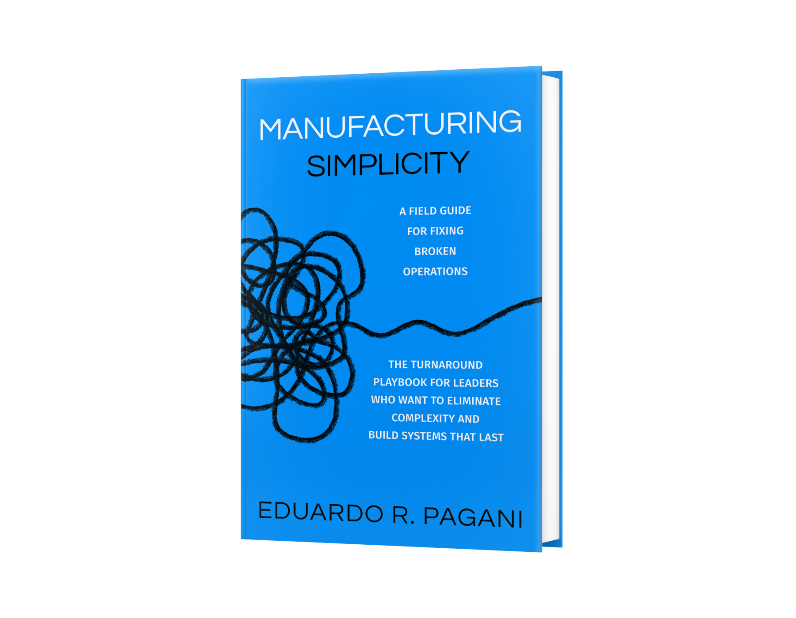

Business priorities first
The book begins with assessment and prioritization so improvement work is tied to customer needs, financial performance, and the organization’s most important constraints.
Amazon Bestselling Book
The Turnaround Playbook for Leaders Who Want to Eliminate Complexity and Build Systems That Last
A practical field manual for CEOs, COOs, business owners, plant leaders, and change agents who need to simplify operations, improve execution, and build a culture of continuous improvement that lasts.

About the book
Manufacturing Simplicity is a practical turnaround playbook for leaders who need to improve performance without adding more complexity.
Drawing on more than three decades of global operations leadership, Eduardo R. Pagani shows readers how to assess a business, identify the few priorities that matter most, select the right Lean methods at the right time, engage employees, strengthen daily management, and build systems that sustain improvement.
Most organizations do not struggle because their people are lazy, careless, or resistant to change. They struggle because complexity slowly takes over. Priorities multiply. Problems hide in plain sight. Meetings replace action. Metrics create noise instead of focus. Improvement projects begin with energy, then fade when daily pressure returns.
Rather than treating Lean as a collection of tools, the book connects operational discipline, leadership behavior, employee engagement, and culture. Every chapter includes a Reflection and Action section so readers can apply the ideas directly and build a practical transformation plan.
Problems addressed
Intended readers
Why this book is different
The central question is not simply which Lean tools exist. It is which problems the organization should solve first, and which methods leaders should use at each stage of the transformation.
The book begins with assessment and prioritization so improvement work is tied to customer needs, financial performance, and the organization’s most important constraints.
Readers learn when Value Stream Mapping, Policy Deployment, Daily Management, Standard Work, Visual Management, and Kaizen are appropriate and how they work together.
The book addresses the leadership behaviors, trust, accountability, engagement, and routines that determine whether improvement survives after the initial push.
Inside the book
The book is organized into three parts and twelve chapters. Open any chapter below for a brief summary.
Understand how complexity develops, why it becomes accepted as normal, and how it affects customers, employees, cost, quality, speed, and execution.
Learn why Lean must operate as a complete management system rather than a series of isolated projects or disconnected tools.
Assess the business, observe the work, engage employees, gather data, identify waste, and determine where improvement should begin.
Explore the leadership behaviors, trust, accountability, engagement, and management practices required to make improvement last.
Define value from the customer’s perspective, recognize waste, understand the current state, and design better flow.
Translate business needs into a focused strategy and align the organization around the few priorities that matter most.
Use clear expectations, visual management, standard work, and disciplined routines to make performance more predictable.
Plan and lead focused improvement events that solve meaningful problems and convert ideas into implemented results.
Apply Lean thinking beyond the factory floor to improve cross-functional processes, information flow, and decision speed.
Build a practical performance-measurement system that creates focus, exposes problems, and reinforces accountability.
Create the leadership routines, employee ownership, and operating disciplines needed to keep improvement moving.
Consider how automation, digital systems, artificial intelligence, and changing conditions can support Lean without replacing its fundamentals.
Advance praise
I’ve had the privilege of working with Eduardo for several years and getting to know him outside of work for the better part of a decade. This book is a testament to what true operational leadership looks like in practice. Eduardo doesn’t just understand operations, he lives it.
The lessons in these pages represent only a fraction of the insight, discipline, and hard-won experience he has applied consistently throughout his career. Anyone looking to build scalable, resilient, and high-performing operations will find this book both practical and invaluable.
Lean is about simplicity, and that is exactly what this insightful and practical book delivers.
Eduardo Pagani distills more than 30 years of experience into a clear and actionable guide, bringing powerful Lean manufacturing concepts and tools into real-world application. As the author puts it, “you don’t do Lean, you become Lean.”
Complexity is the silent killer of profits and morale. In Manufacturing Simplicity, Eduardo Pagani gives you the surgical tools to strip away the waste and restore operational clarity.
This isn't just another Lean book. It’s a hands-on manual for building a resilient, high-performance organization. If you're tired of firefighting, this is your exit strategy.
Manufacturing Simplicity breaks down Lean manufacturing in a way that feels practical, clear, and accessible, especially for a commercial product leader without an engineering background.
Rather than overwhelming the reader with jargon, Pagani helps build the mindset of seeing inefficiencies, understanding their business impact, and identifying opportunities for sustainable change.
Recognition and coverage
The book reached Amazon bestseller status following its June 2026 launch.
View the book on AmazonFeatured in VAB’s July 2026 selection of books written by members of its governance and advisory-board community.
Read the VAB featurePublished by Game Changer Publishing, which supported the development and launch of the book.
Visit the publisherReader questions
No. Although many examples are grounded in manufacturing and operations, the principles apply to any organization struggling with complexity, unclear priorities, disconnected processes, poor execution, or unsustainable improvement efforts.
Lean methods are included, but the book is not organized as a catalog of tools. It helps leaders assess their organizations, identify business priorities, determine which methods should be applied, and build the leadership system and culture needed to sustain improvement.
No. The book explains the principles clearly enough for leaders who are new to Lean while providing practical depth for experienced operations and continuous-improvement professionals.
Yes. Every chapter contains a Reflection and Action section. Readers also receive access to downloadable worksheets, diagnostics, checklists, and implementation materials.
Yes. Leadership teams can use the chapters, reflection questions, assessments, and templates to evaluate their business, establish priorities, and build a shared transformation plan.
Yes. The book was designed as a practical field manual for leaders who need to diagnose problems, restore focus, improve execution, engage employees, and create sustainable operating systems.
Apply the ideas
Readers can request practical materials designed to help assess the business, identify complexity, collect improvement opportunities, and translate the book into action.
These supporting tools complement the Reflection and Action sections and help leadership teams begin building their own transformation plan.
You will be taken to a short request form. After submitting your information, the bonus materials will be sent by email.
Stop adding initiatives to an already overloaded organization. Learn how to focus the business on the right priorities, engage the people closest to the work, and build improvement systems that last.